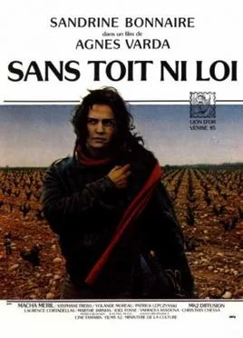

Explore film ↗
Explore film ↗Cléo from 5 to 7
Agnès Varda
THE ARCHIVE / 032
1993 · United States · Drama
A film by Clint Eastwood
An escaped prisoner takes a boy hostage, and an unexpected bond develops during a pursuit across Texas.
Saved automatically in this browser. Ratings are your own, not critic scores.
Film reference: Source information ↗
Synopsis: original FRAME summary. Genre and displayed production country: concise editorial classifications; international co-productions may include additional countries.
Explore film ↗Agnès Varda

Explore film ↗Agnès Varda
 Explore film ↗
Explore film ↗François Truffaut
 Explore film ↗
Explore film ↗Akira Kurosawa